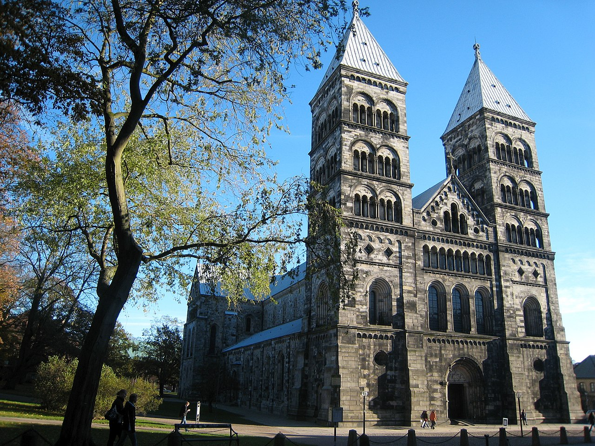

Estate 2026 · Road Trip
SVEZIA
Dove le strade finiscono e la natura comincia.
Stoccolma & Dalarna
La capitale, i laghi silenziosi, le foreste di betulle


Städjan-Nipfjället Nature Reserve
La riserva di Städjan-Nipfjället è il lato più selvaggio della Dalarna: la Magic Road verso Idrefjäll regala vedute sull'altopiano svedese che non ci si aspetta a questa latitudine.


Stoccolma
Stoccolma si scopre meglio a piedi e in barca: quattordici isole collegate da ponti, un arcipelago di 30.000 isole a est, e quartieri come Södermalm che sembrano vivere su un altro pianeta.


Lago Siljan e Mora
Il Lago Siljan in estate è un dipinto: barche a vela bianche, foreste di betulle fino all'acqua, e i villaggi rossi di Mora e Rättvik dove ogni luglio risuona la musica folk della Dalarna.


Sud — Skåne
Spiagge di sabbia, fortezze medievali, megaliti sul Baltico


Musei di arte
Malmö è più dinamica di quanto si pensi: il Konsthall, il Moderna Museet e il Malmö Art Museum offrono programmazione di livello europeo, in una città che si è reinventata in vent'anni.
Approfondisci →


Eastern Costal Road
La Eastern Coastal Road da Ystad verso l'Österlen è una delle strade più belle dello Skåne: spiagge di sabbia bionda, le pietre di Ales Stenar sul promontorio, e villaggi dove il tempo scorre più lento.
Approfondisci →


Paesi sulla costa
La costa dello Skåne è costellata di fortezze medievali, mulini a vento e paesi di mattoni rossi affacciati sul Baltico. Un itinerario da fare lentamente, con soste improvvisate.
Approfondisci →


Ovest & Laghi Centrali
Da Göteborg alle rive del Vättern, tra coste frastagliate e castelli


Orebro
Örebro sorprende: una città vivace con un castello medievale perfettamente conservato che si specchia nel fiume Svartån. Una sosta obbligata tra Stoccolma e Göteborg.


Gothernburg
Göteborg è la città svedese più rilassata: filobus vintage lungo i viali, mercato del pesce fresco a Feskekörka, e un arcipelago raggiungibile in traghetto dove non passa quasi nessuno.
Approfondisci →


E6
La E6 a nord di Göteborg costeggia il Bohuslän: scogliere di granito rosa che piombano nel mare, ville di villeggiatura centenarie, e fari raggiungibili solo in barca.


Zona lago Vättern
La zona del Lago Vättern intorno a Gränna è nota per i bastoncini di caramella a spirale — e per una delle viste più belle sulla Svezia: l'isola di Visingsö nel secondo lago più grande del paese.
Approfondisci →


Höga Kusten
La costa più bella della Svezia: fiordi baltici, isole remote, silenzio


Höga Kusten (High coast)
L'Alta Costa (Höga Kusten) è la risposta svedese alle fjord norvegesi: meno famosa, altrettanto spettacolare. La strada panoramica tra Skuleberget e il ponte è considerata la più bella della Svezia.
Approfondisci →


Città
Umeå è la capitale culturale del nord: università, design nordico, e una scena gastronomica sorprendente. La Gammlia — il museo a cielo aperto — racconta la vita dei coloni del Norrland.


Isola Norra Ulvön
Si prende il traghetto da Ullånger e in un'ora si è su Ulvön, un'isola che ancora profuma di surströmming. La cappella del 1622, le case rosse, il Golfo di Botnia.
Approfondisci →


Högklinten and Skuleberget
Skuleberget è la vetta simbolo dell'Alta Costa: 295 metri di roccia sul mare. La via ferrata è aperta a tutti; il Farmer's Market di Nordingrå nel weekend è il bonus.
Approfondisci →


Strade Selvagge del Nord
Wilderness Road, Blue Highway e la riserva naturale ai confini del mondo


Wilderness road
La Wilderness Road attraversa la Lapponia svedese da Strömsund verso nord: centinaia di chilometri senza semafori, tra foreste di betulle, laghi silenziosi e renne sul ciglio della strada.
Approfondisci →Approfondisci →


Strada e regione nella svezia del nord
La Blue Highway E12 è la trasversale che collega la costa baltica alla Norvegia. Si risale da Umeå verso ovest con il fiume Ångermanälven che accompagna il percorso fino alle montagne.
Approfondisci →


Vindelfjällen natural reserve
Ai confini con la Norvegia, Vindelfjällen è uno dei territori incontaminati più grandi d'Europa. Fiumi selvaggi, montagne di quarzo, silenzio assoluto — interrotto solo dai gridi delle aquile reali.


Alta Lapponia
Parchi senza sentieri, cime inviolate, notti senza tramonto


Dundret mountain hiking
Dundret è la montagna di Gällivare: d'estate ci si sale per guardare il sole di mezzanotte, d'inverno per gli sport sulla neve. Il contrasto tra cielo aperto e foresta boreale toglie il respiro.


Sarek National Park e Stora Sjöfallet
Sarek e Stora Sjöfallet sono tra i pochi parchi in Europa senza sentieri segnati né rifugi. Solo creste di quarzite, laghi glaciali e libertà assoluta. La strada Ritsemvägen porta fino ai loro bordi.


Logistica
Durata
13 giorni (flessibile: 3–15)
Voli
Circa 280–300€ a/r — Kayak, bagaglio a mano e stiva
Auto
Circa 580–650€ totali. Guida a destra come in Italia. Strade in ottime condizioni.
Costo stimato a persona
Circa 585€ (voli + auto divisi in due). Vitto e alloggio non inclusi.
Cross-border pass
Se si include Copenhagen, il noleggiatore può richiedere un cross-border pass (~18,55€/giorno).
Alternativa: Stockholm → Copenhagen
Volo andata su Stoccolma, ritorno da Copenhagen con treni Göteborg–Malmö–Copenhagen. Permette di vedere sud e nord senza tornare indietro. Discussione Reddit →
Itinerario suggerito
Stoccolma → Dalarna → Höga Kusten → Nord (Wilderness Road) → Lapponia → A/R o rientro da Copenhagen via Göteborg e Skåne.